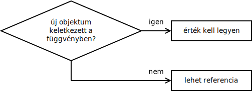

A referenciákat a következő példával szokták bevezetni: írjunk egy függvényt, amelyik két szám szorzatát és összegét adja vissza. Ezt nyilván sima visszatérési értékkel nem tudjuk megtenni, mert abból csak egy van, ezért C-ben a következőt írjuk:
void szamol(int egyik, int masik, int *osszeg, int *szorzat) {
*osszeg = egyik+masik;
*szorzat = egyik*masik;
}A C nyelv csak az érték szerinti paraméterátadást ismeri, ami azt jelenti, hogy a függvény hívásakor a paraméterben megadott kifejezés kiértékelődik, és a kiértékelődés eredményét kapja csak meg a függvény. A következő szamol() függvény ezért a két hívás között nem lát különbséget:
int o, sz;
int a = 5, b = 9;
szamol(5, 9, &o, &sz);
szamol(a, b, &o, &sz);Akár egy számot, akár egy változót kap a paraméterben, mindkettőnek csak az értékét fogja látni. Ezért kényszerültünk rá, hogy a második két paraméterben ne o-t és sz-et adjuk át neki, hanem o-ra mutató pointert és sz-re mutató pointert; különben csak o-nak és sz-nek az értékét látná, a változókat, ahova írnia kell, egyáltalán nem.
A paraméterként kapott változók a függvény lokális változóinak számítanak, és azokat akár meg is változtathatja. A fenti példában a szamol() függvény az egyik és a masik változót megváltoztathatná, de arról a hívó nem értesülne. Ami egyébként logikus is, hiszen az 5-ös és a 9-es literális konstans nem változhat meg. A két pointert is átállíthatná máshova, attól pedig az o és az sz változó helye a memóriában értelemszerűen nem változna meg. Ezt gyakran használják is. Például egy sztring hosszát megszámoló függvény ilyen is lehet:
int strlen(const char *sztring) {
int hossz = 0;
while (*sztring != '\0') {
sztring++;
hossz++;
}
return hossz;
}Amíg meg nem találjuk a sztring lezáró nulláját, a hosszhoz hozzáadunk egyet; illetve a pointert átállítjuk a következő karakterre. A sztring nevű pointer a függvény lokális változója (a paraméterként kapott sztring memóriacímének másolata); a függvény azt csinál vele, amit akar. (A const itt nem a pointerre, hanem az általa mutatott karakterekre vonatkozik.)
Innen megyünk tovább a referenciákhoz, mondván, hogy kényelmetlen minden függvényhívásnál kitenni a címképző operátort, és a számol függvény belsejében is kényelmetlen a sok csillagozás:
void szamol(int egyik, int masik, int& osszeg, int& szorzat) {
osszeg = egyik+masik;
szorzat = egyik*masik;
}
int o, sz;
szamol(5, 9, o, sz);A C++ bevezette az érték szerinti paraméterátadás mellé a cím szerinti paraméterátadást. Ezt referenciákkal oldja meg, amelyeket a & karakter jelöl. A függvényhívás helyén látja a fordító, hogy a függvény nem o és sz változóknak a tartalmát szeretné látni, hanem magukat a változókat, ezért automatikusan képezi a címüket. A függvény belsejében pedig látja, hogy nem lokális integerekről van szó, hanem memóriahelyeket kapott, ahova az összeadás és a szorzás eredményét végül írni kell.
Ha arra gondolunk, hogy a referencia háttérben egy pointerként is lehet megvalósítva, akkor az összes kérdésre válaszolni tudunk egyből, amelyek arra irányulnak, hogy mit szabad referenciákkal csinálni és mit nem. Nem térhet vissza például egy függvény a lokális változójának a referenciájával, ahogy nem térhetett vissza a lokális változójára mutató pointerrel sem, mivel a változó megszűnik a függvényből visszatéréskor. Ennek ellenére jobb nem úgy gondolni a referenciákra, mint memóriacímekre. A referencia nem memóriacím, hanem maga a változó. A fenti szamol() függvény megkapja paraméterben két változónak a másolatát, amelyeket össze kell adni és szorozni, és kap két másik változót, ahova az eredményeket kell tennie. Az első helyen jó az érték szerinti átadás, mivel csak a számok érdeklik a függvényt, az nem, hogy azok honnan lettek. A második helyen pedig ténylegesen, pontosan azokat a változókat kellett megadni, ahova az eredményt kell írnia. A referencia ezért maga a változó, azzal mindenben teljesen egyenértékű. Mintha az eredeti változónak lenne egy másik neve. Ha osszeg változóba ír a függvény, akkor a hívás helyén megadott o-t változtatja meg. Ha osszeg címét képezi, akkor o címét fogja megkapni.
A függvény egyébként a harmadik és a negyedik paraméterében egy egész típusú változót vár; vagyis ott nem fogja engedni a fordító, hogy például o+sz-t írjunk, mert az nem balérték. Ez kevésbé látványos, mint pointerekkel. C-ben, ahol kézzel ki kellett írni a címképző operátort. Ott látványosabb volt: senkinek nem jut eszébe azt írni, hogy &(o+sz).
Az objektum-orientált C++ nyelvben az érték és referencia szerinti paraméterátadás még a másoló konstruktorok gondolatával egészül ki. A referencia szerint adunk át valamelyik függvénynek egy objektumot, akkor magát az objektumot kapja meg (pontosan azt az objektumot, amelyiket paraméterben adtuk neki); ha érték szerint, akkor az objektumnak csak a másolatát. Hogyan képződik egy objektumnak a másolata? Természetesen annak másoló konstruktorával. A függvény végén pedig megszűnnek annak lokális objektumai. Érték szerinti paraméterátadás esetén ez azt jelenti, hogy az objektum másolata megszűnik, vagyis a destruktora le fog futni. Referencia szerinti átadásnál ilyenkor nem történik vele semmi, mert nem lokális változója volt, továbbra is léteznie kell majd.
Hogy egy függvénynek egy objektumot másolatként vagy referenciaként adunk át, az attól függ, mit szeretnénk csinálni vele:
- Ha érték szerint veszi át a függvény, akkor akár meg is változtathatja, azzal az eredeti objektumra nem lesz hatással. Ez például egy munkamásolat lehet. Ha ilyenre van szükség, akkor mindenképpen értékként kell átvenni az objektumot.
- Ha referencia szerinti a függvény paramétere, akkor az eredetit látja, és azon tud dolgozni, ilyenkor viszont az eredeti objektum is megváltozhat. Ha erre van szükség, akkor mindenképpen a referencia szerint átadást kell választani.
- Ha nem szeretnénk se megváltoztatni, se lemásolni az objektumot, akkor általában konstans referenciával vesszük át.
Az érték szerinti átadás esetén az objektumnak a másoló konstruktora és a destruktora futni fog. Ez hosszú idő lehet. Ha a másolás számunkra fölösleges, akkor érdemes inkább referencia szerint átvenni az objektumot, mert sokkal gyorsabb lehet a program. Ha referencia szerint vesszük át, akkor vigyázni kell, nehogy szándékolatlanul megváltoztassuk annak állapotát. Ezért objektumokat gyakran konstans referenciával kell átvenni; a konstans kulcsszó hatására a fordító ellenőrizni fogja, hogy változtatást biztos ne végezzünk rajta. Mivel a beépített típusok (pl. char, int) kicsik, ezért azokat, ha nem szükséges a függvénynek megváltoztatnia az eredeti változókat, érték szerint szokás átvenni – mert a másolásuk gyors, destruktoruk nincs.
Előfordulhat néhány eset, amikor pedig egy objektumot csak referencia szerint tudunk átvenni – névlegesen, amikor az objektumnak nincs másoló konstruktora. Ilyen osztály például az std::ostream, amelyik egy nyitott fájlt jelképez. Ennek nincs másoló konstruktora, mivel értelmetlen lenne. Ezért az std::cout-ot mindig referenciaként tudjuk csak átvenni. Másik ilyen eset az pedig az osztályok másoló konstruktora maga. Ezeknek a lemásolandó objektumot muszáj referencia szerint átvenniük, mivel ha érték szerint vennék át, akkor ahhoz pont a másoló konstruktorra lenne szükség, vagyis végtelen ciklus keletkezne.
A referenciákra gyakran címként gondol az ember. A pointerek is memóriacímek; amit meg lehet csinálni referenciával, azt meg lehet csinálni pointerrel is.
A különbség az, hogy a referencia mindig pontosan egy objektumra mutat, és létezése során mindig pontosan ugyanarra az objektumra. Ha létrejön egy referencia, az egy lesz valamelyik objektummal; nem is lehet átállítani másik objektumra. Ezzel szemben egy pointert át lehet állítani másikra, sőt egy pointer akár lehet 0 is, vagyis azt is megteheti, hogy nem mutat sehova.
A referencia egyetlen objektumra mutat, a pointer mutathat objektumok tömbjére is. Ezért kell vigyázni a pointerekkel, mert alapvetően egy pointeren nem látszik, hogy hány elemre mutat. Helyes használat esetén pont ez teszi megkülönböztethetővé, hogy egy függvény egy objektumot vár, amit meg akar változtatni, vagy egy tömböt:
void fv(char& c); /* egy szám, amibe beleírna */
void fv(char* c); /* karakterek tömbje */A fentiek alapján: referenciát használunk, ahol lehet; pointert használunk, ahol muszáj. A „muszáj” pedig háromféle eset lehet:
- tömbről van szó,
- át kell állítani máshova,
- lehetséges, hogy nem mutat sehova,
- (a ráadás: C-ben függvényt kell hívnunk, amelyik csak a pointereket érti.)
Ha referenciaként veszünk át egy objektumot, akkor még konstans esetén is gondolnunk kell arra, hogy a paraméterben az eredeti objektumot látjuk. Ez például akkor válhat érdekessé, amikor egy osztály tagfüggvénye saját típusú objektumot vár paraméterben. Leggyakoribb példa erre az osztályok értékadó operátora:
class Sztring {
char *szo;
public:
Sztring& operator=(const Sztring& s) {
if (this != &s) {
delete[] szo;
szo = new char[strlen(s.szo)+1];
strcpy(szo, s.szo);
}
return *this;
}
};
Sztring x;
x = x;Mivel a függvény a paraméterben olyan fajta objektumot vár, mint saját maga, előfordulhat az, hogy pontosan saját magát kapja meg. Ilyenkor a this ugyanarra az objektumra mutat, mint ami paraméterként s-ben jött, vagyis a delete[] szo sorral igazából s-nek a szo tömbjét „is” felszabadítjuk. Ezért van szükség annak ellenőrzésére, hogy a this ugyanaz az objektum-e, mint a paraméterben kapott – nem csak hogy egyformák-e, hanem ugyanazok-e. A másoló konstruktorban erre azért nem volt szükség, mert az éppen létrehozott objektum úgysem ugyanaz, mint bármelyik eddigi. Az értékadó operátor is átvehetné másolatként az egyenlőség jel jobb oldalán álló objektumot (feltéve persze, hogy a másoló konstruktort nem erre vezettük vissza):
Sztring& operator=(Sztring s);Ez egy tulajdonképpen működő, de hatékonyság szempontjából nem túl jó megoldás. Ugyanis ilyenkor a lemásolandó sztring először lemásolódik (mivel az értékparaméter másolatként kerül a függvényhez); utána a függvény a lemásolt sztringből másolná át saját magához a tartalmat, végül a másolat megszűnik a destruktorával. Ugyan ilyenkor nem kellene a this != &s ellenőrzés (mivel a másolat úgysem ugyanaz, mint saját maga), de az objektum létrehozása és törlése sok ideig tarthat.
Mindez egyébként a pointerekre is igaz. A következő problémára futottam rá egyszer C-ben:
char *legutobbi_fajl = NULL; void legutobbi_fajl_beallit(const char *nev) { if (legutobbi_fajl) { free(legutobbi_fajl); // 1 } legutobbi_fajl = malloc(strlen(nev)+1); strcpy(legutobbi_fajl, nev); } void fajl_beolvas(const char *nev) { ... legutobbi_fajl_beallit(nev); } ... fajl_beolvas(legutobbi_fajl); // 2A hiba helye nem volt triviális, mivel a lefagyást közvetetten kiváltó programrész távol volt a lefagyás tényleges helyétől (ráadásul más forrás fájlban). Az 1-es sor felel meg a sztringes példa
delete[] szosorának, a 2-es sor pedig azx=xönértékadásnak. Látszik, hogy az egész kód célja, hogy a sort be lehessen írni, azt a magától értetődő feladatot elvégezni vele, hogy megnyitja a legutóbb használt fájlt. A sztring érték szerinti átadására persze C-ben esély sincs.
A visszatérési értékek referencia vagy másolat szerinti átadása is eldönthető egyszerűen. A „lokális változóra nem lehet pointert adni” szabály helyett sokkal szemléletesebb arra gondolni, hogy a visszaadott objektum új, vagy már eddig is létezett:
class Komplex {
double re, im;
...
};
Komplex Komplex::operator+(const Komplex& rhs) const {
Komplex osszeg;
osszeg.re = this->re+rhs.re;
osszeg.im = this->im+rhs.im;
return osszeg;
}
Komplex& Komplex::operator+=(const Komplex& rhs) {
this->re += rhs.re;
this->im += lhs.im;
return *this;
} Az összeadásnál egy új szám keletkezik. A növelésnél az operátor bal oldalán álló szám megváltozik, visszatérni pedig pont azzal kell, új objektum értelemszerűen nem keletkezik.
A referenciák nagyon fontosak az öröklés, a leszármazott osztályok kezelése esetén is. Ha van egy alaposztályunk: class Alap, és egy leszármazott osztályunk: class Leszarmazott: public Alap, akkor a lenti két függvény között elvi különbség van:
void fv1(Alap a);
void fv2(Alap& a);Ha ezt a két függvényt meghívjuk a leszármazott osztály egy példányával: Leszarmazott x; fv1(x);, akkor már nem csak az lesz a különbség, hogy lemásolódik-e az objektum vagy nem. Az első függvénynek átadva ugyanis a leszármazott objektumból létrejön egy alap objektum, vagyis csak az alaposztályra jellemző adatai adódnak át! Ezzel szemben, a referenciát használva – amely hasonló ahhoz, mintha pointert használnánk – az eredeti objektumot fogja látni az fv2() függvény, vagyis a leszármazottra jellemző adatokat is (ha közvetlenül nem is, de annak virtuális függvényein keresztül biztosan.)
Ugyanezért szokás a kivételeket is catch(std::exception& e) referenciával elkapni. Ha nem referenciával tesszük, akkor elveszítjük a leszármazottakra jellemző adattagokat.